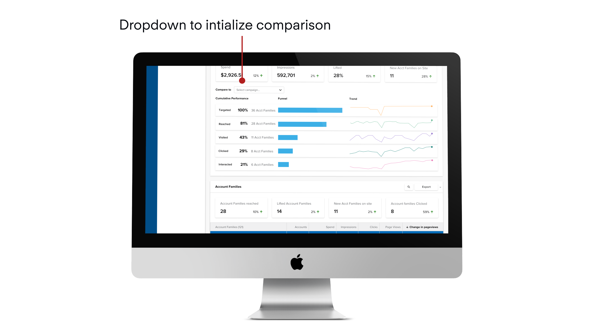

How does the human brain perceive and understand new stimuli within a situation that is lacking context?
We fill in gaps of understanding, making assumptions that scaffold what we are able to see.
This gap in understanding between user and platform is exactly what I was targeting in Q3 2021 as the lead designer on a new feature aimed at helping users understand the data within the platform easier. This stemmed from a piece of user feedback:
SKIP TO SOLUTION

We can tie this directly to the persona that this individual belongs to:

As you can see, she often struggles with understanding the information, and needs a new way to consume this information.


Approach
First, I empathize with the user by creating a map of what they do, what possible gaps exist in their workflow and what this might really mean.

From this, I identified one of the core issues, the user is not able to understand what the metrics mean due to the abstract nature of how the numbers are presented.

The user will see info like the number shown above under impressions, but they don’t really know what it means.
How can we fix this?
My hypothesis to this: Comparisons
Humans are constantly comparing new sensory information to a point of reference that we already understand. We can adopt this mental model into the products that we create to take an advantage of this.
Now we have to figure out what to compare, with the core metrics being listed in advertising below:

From these, we can narrow down the type of comparisons possible to one core type, Targeting. The main campaigns summary card delivers cumulative information for bulk selected campaigns, and we could use these metrics to compare one campaign to another, using a benchmark.
To determine a direction for visualizing this comparison, I needed to scan the advertising product to see which patterns were in use.

Summarizing this, I needed the following to get started

Once I had figured out where I could place the comparison, I needed a unit of analysis, and a point of entry into visualizing this comparison. For this, I chose the single campaign screen, which is found by drilling down one level through the main advertising page.

We can document this using a critical user journey for how they might flow into this comparison.

Documenting the flow itself, we can initiate with the following pattern.


Now that we had our core design ready, I moved towards testing this pattern with a group of internal users, varying in expertise with the product. (N=7). This was done with a UX Researcher through moderated sessions on zoom, and recorded in dovetail.


Iteration
This led me back to the drawing board where I took in some of the feedback given, and synthesized it with previous research. One option that I had explored earlier, but didn’t pursue fully was a 2 bar approach.
This had some implications on the flow, and it changed accordingly to accommodate the two bar approach. This change was mostly visual, but I added new tool tips to clarify which object was the point of interest.

This translated into Higher Fidelity comparison, which is shown here:

Final Sentiment

Full Mockups


Prototype Walk Through
Learning
This project was extremely fun throughout. I was able to lead a new feature release from the initial secondary research all the way up to development, and it was gratifying throughout the way. Hearing both negative and positive sentiments during user testing sessions helped me to improve in being able to rapidly act on feedback and address user needs.
I gained experience working on a new feature from scratch, learning project sizing in order to avoid scope creep, and working closely with user researchers to improve designs through feedback and iterations. A lot of the theory that is packed in the classroom became apparent through this project, and I was able to apply a lot of the skills that I learned.
If I had more time to work on this, I would try to test with more users who aren’t as familiar with the product. Due to time constraints, we were only able to test with a small number of external users, and mostly internal users who are power users. This can skew the actual adoption of the feature, as these users tend to behave a little differently, and have ready access to more support internally.
Next Step
A followup on this project that would be a v2 improvement would be to show campaign metrics in a small expandable table below the comparison. This was heavily asked for during our user testing sessions for ease of access. The information is actually baked into the tooltips in the chart, but would be easier to parse with a table.
 Back to main page
Back to top
Back to main page
Back to top